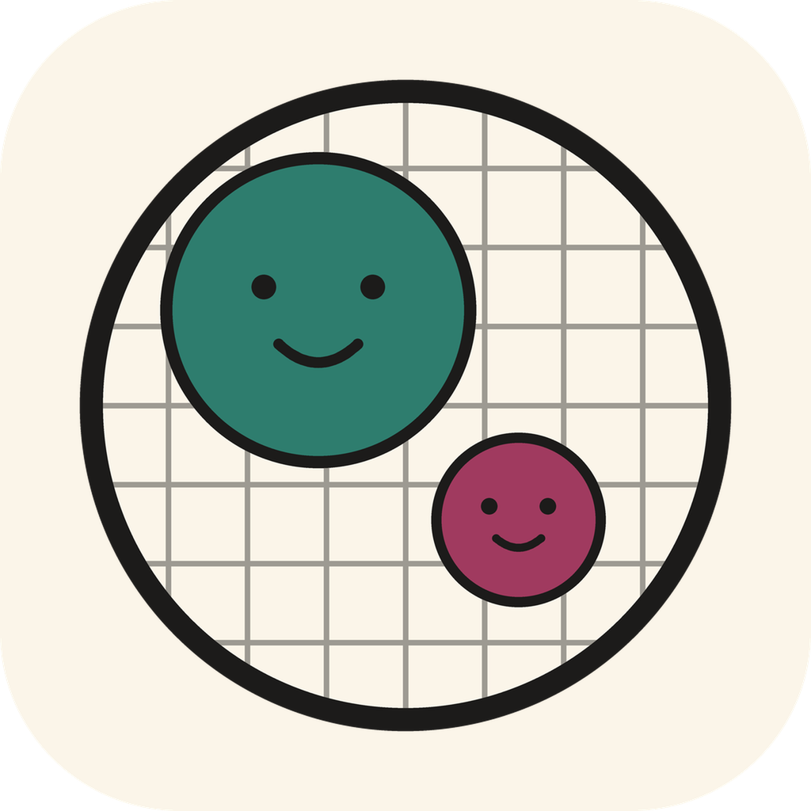

About us
Why I convene this table
한수 프로젝트 is led by Nofar Lupo. This page is about her: what she brings, what she does not claim, and why she asked two generations to sit down together.
I am Nofar Lupo. I live in Busan.
I run 닛심워크 (Nissim Work), a learning design and corporate training practice here. We design how people learn at work: training programmes, workshops, the structure inside them. Our clients are Korean companies and training organisations abroad, and many of the people I teach are early in their careers.
That is where I met the problem. I work with young professionals who are technically strong and were never taught how a business actually runs. And I meet people who spent thirty years learning exactly that, and now have no room to use it.
Both sides are in the same city. Both have something the other needs. Almost nothing connects them. That is the gap I decided to build into.

한수 프로젝트
한수 is a move in baduk. 한 수 배우다, to learn one move from someone who plays better, is an ordinary phrase in Korean. We took it literally.
Why me, and not someone with thirty years in a Korean company?
A retired CEO asked me this, and it is the right question. I have not spent thirty years inside a Korean corporation, and I will not pretend that I have.
What I bring is three things.
A method. I design learning for a living. I know how to prepare two people for a relationship that has to survive past the first good meeting, and how to keep it honest when it gets difficult.
Access to the next generation. I work with young professionals every week. I know what they were taught and, more usefully, what they were not.
The will to convene. Someone has to make the introduction, hold the schedule, write the rules and stay reachable. That is my job, and I am accountable for it.
The judgement itself belongs to the senior executives. That is the whole design. They bring what only they have, and I build the room where it can be passed on.
Four beliefs the program is built on
It is human to learn from each other. Somebody ate something bad once, and you did not, because they told you. That is how we have always learned.
Knowledge that takes thirty years to build should not retire with the person who built it.
Judgement transfers in the room, while a decision is being made. Not in a classroom, and not in a report.
Neither generation can solve this alone. That is not a slogan. It is the reason the table has two chairs.
Why this city
Busan has the universities, the talent and the companies. It has a generation that built real businesses here and a generation that wants to build something of its own. What is thin is the link between them.
That link is not a grant or another programme. It is a relationship that lasts longer than one meeting, between two people who would not otherwise have met. We are building that, one pair at a time.
The founder stays in Busan, because now there is a reason to.
The founding circle is forming
한수 프로젝트 is building its founding circle now: three seats for senior executives, two still open. The first full cohort follows the pilot, and the pilot is where the standard gets set. If you want to be one of the three people who decide what that standard is, write to me.
If you write to me, I read it. If you are a retired executive with something to pass on, start with the founding circle. If you are a founder with a decision in front of you, start with the application.
Each button opens an email with the questions already written.